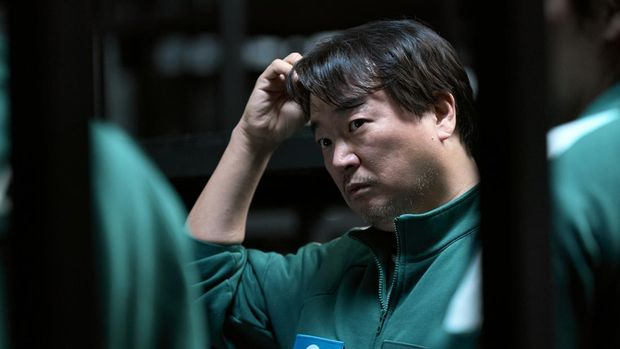
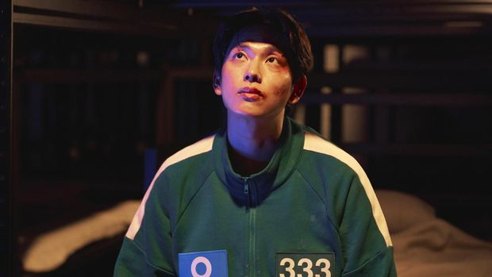
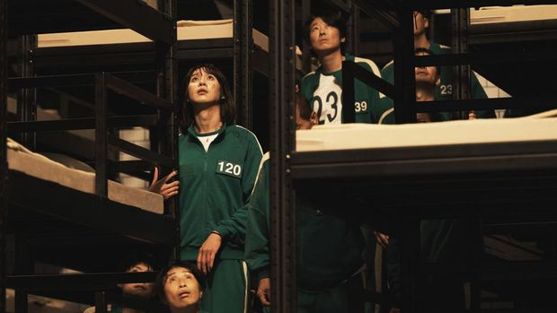

7 Pemain Baru Squid Game 2, Dibintangi Jo Yu-ri hingga Park Sung-hoon

Purwakarta, AboutNews-- Squid Game 2 merupakan musim kedua dari serial hit Squid Game (2021). Musim kedua ini kembali menampilkan berbagai jenis permainan maut yang diikuti ratusan peserta. Lee Jung-jae kembali memerankan Seung Gi-hun, pemenang sekaligus satu-satunya pemain yang selamat dari permainan musim pertama. Beberapa karakter pendukung juga kembali muncul, seperti Front Man (Lee Byung-hun) dan The Recruiter (Gong Yoo). Selain itu, Squid Game 2 diramaikan pemain baru yang bertabur bintang. Sebagian besar pemeran baru itu menjadi peserta Squid Game edisi terbaru yang kembali diikuti Seung Gi-hun. Beberapa pemeran baru lainnya menjadi pekerja hingga tentara berkostum merah muda dengan tugas mengawasi sekaligus mengeksekusi para peserta yang kalah. Berikut 7 pemain baru Squid Game 2.
1. Jung-bae (Lee Seo-hwan)
Jug-bae merupakan mantan rekan kerja sekaligus sahabat lama Seung Gi-hun. Ia terlilit utang besar akibat gemar berjudi pacuan kuda, hidupnya pun kacau hingga diceraikan sang istri. Keterpurukan itu membawa Jung-bae mengikuti permainan misterius tersebut. Ia memakai nomor peserta 390, kemudian bertemu kembali dengan Gi-hun setelah sekian lama.
2. Lee Myung-gi (Yim Si-wan)
Lee Myung-gi dulu berprofesi sebagai YouTuber finansial, terutama seputar kripto. Hingga suatu hari, ia menjadi kehilangan banyak uang setelah investasinya di kripto gagal total. Myung-gi juga menjadi buronan karena banyak pengikutnya rugi besar akibat tergiur sarannya. Ia lalu mencoba mencari jalan keluar dengan ikut permainan, memakai nomor peserta 333.
3. Kim Jun-hee (Jo Yu-ri)
Jun-hee muncul di arena pertandingan memakai nomor peserta 222. Ia juga tengah mengandung dengan usia kehamilan yang sudah besar. Kehamilan itu mendorong Jun-hee ikut bermain agar bisa membesarkan anaknya sendiri karena mantan kekasihnya yang juga salah satu peserta, Lee Myung-gi, justru kabur dan tak bertanggung jawab.
4. Cho Hyun-ju (Park Sung-hoon)
Cho Hyun-ju terdesak untuk ikut permainan demi menyelesaikan operasi penegasan gendernya. Ia merupakan seorang transgender yang bermain dengan nomor peserta 120. Sebagai transpuan, Cho Hyun-ju tidak luput dari skeptisme peserta lain. Namun, secara perlahan, beberapa peserta memberikan simpati karena berkenalan dengan Hyun-ju secara lebih dalam.
5. Thanos (Choi Seung-hyun)

Thanos sempat memiliki karier cemerlang sebagai seorang rapper. Namun, kiprahnya merosot tajam sejak keuangannya kacau akibat investasi bodong. Ia merupakan salah satu pengikut Lee Myung-gi yang kehilangan harta karena mengikuti saran untuk menginvestasikan semua asetnya dalam kripto. Thanos lalu bergabung sebagai peserta nomor 230.
6. Park Gyung-seok (Lee Jin-uk)

Park Gyung-seok memiliki motif berbeda ketika mengiyakan tawaran bermain Squid Game. Ayah tunggal itu rela bergabung demi menyelamatkan nyawa anaknya. Sebab, putri semata wayangnya itu membutuhkan biaya besar untuk biaya pengobatan kanker. Ia lalu mengikuti permainan dengan memakai nomor peserta 246.
7. Kang No-eul (Park Gyu-young)

Berbeda dengan lainnya, Kang No-eul merupakan karakter baru yang tidak bergabung sebagai salah satu peserta. Ia menjadi Pink Guard alias tentara berkostum merah muda yang mengawasi serta mengeksekusi peserta. Kang No-eul terdaftar sebagai Pink Guards nomor 011. Ia merupakan mantan tentara dan pembelot Korea Utara yang membutuhkan banyak uang agar bisa membawa putrinya keluar dari Korut.